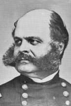

|

|

|
|
|
Inventor of the Burnside carbine, union general and
three-time governor of Rhode Island, Ambrose Everett Burnside was
the commander of the Army of the Potomac between November
1862 and January 1863.
Burnside was born in Liberty, Indiana in 1824. Originally
from South Carolina, his father had freed the family's
slaves and moved north shortly before Ambrose's birth.
Burnside entered the United States Military Academy at West
Point in 1843. Graduating 18th in the class of '47, he saw
action in the Mexican War. Remaining in the regular army
after the war, he was wounded by Apaches while guarding the
Southwestern border area.
In 1853, Burnside resigned his army position and moved
to Rhode Island. There he started a manufacturing company
that produced a breech-loading rifle he himself had
designed. Burnside failed to secure a crucial government
contract, and his creditors took ownership of his patents.
Thousands of Burnside carbines would be produced for the
Army during the Civil War.
In the late 1850s, Burnside moved from one job and state
to another. He worked for George B. McClellan, a fellow West
Pointer and future commander, on the Illinois Central
Railroad, and for the Rhode Island Militia. At the beginning
of the Civil War, Burnside re-joined the Army, and was
appointed colonel in the 1st Rhode Island Volunteers. He
fought at First Bull Run, and shortly thereafter was
elevated to brigadier general by President Lincoln.
Burnside's successful campaigns in North Carolina, led to
the capture of Roanoke Island, New Bern, Beaufort, and Fort
Macon.
Promoted to major general in 1862, Burnside commanded the
IX Corps in the Army of the Potomac, which he led during the
Antietam campaign of September 1862. On the day of the
battle, September 17, Burnside's orders from General George
McClellan were to move against Lee's right side, which had
been seriously weakened during the terrible fighting. Seized
with indecision, Burnside delayed moving his corps over a
pretty stone bridge (now known as "Burnside's Bridge") that
crossed Antietam Creek. That delay allowed Confederate
reinforcements to strengthen the lines, and one of the great
opportunities for a smashing Union victory was lost forever.
Burnside's boss, George McClellan, lost his command a
month later, and Lincoln appointed a reluctant Burnside in
his place. Burnside had declined Lincoln twice before, not
only out of loyalty to his friend, but because of an
accurate assessment of his lowly generalship capabilities.
Predictably, Burnside's command of the Army of the Potomac
was a disaster. First, he lost a costly battle in December
1862 at Fredericksburg, Virginia against Lee's vastly
outnumbered army. Then, in a vain attempt to redeem his
reputation and uplift his demoralized army, Burnside decided
to go "on to Richmond" in the middle of the winter. His
troops were dry when they started their march out of the
Washington D.C. camps on January 19, but soon the rains
came, and "Burnside's Mud March" became the laughingstock of
the nation.
In January of 1863, Lincoln removed Burnside from command
of the Army of the Potomac, and replaced him with General
Joseph Hooker. By March he had been given command of the
Department of the Ohio. Away from the battlefield, Burnside
proved more successful. He arrested and tried Democratic
Congressman Clement L. Vallandigham, a notorious Copperhead.
He also managed to direct the capture of Confederate John
Hunt Morgan, whose cavalrymen were threatening southern
Ohio. Toward the end of the year, Burnside ably defended
Knoxville against Confederate forces, saving the city for
the Union.
Burnside joined the 1864 spring campaigns under General
Ulysses S. Grant. He was placed in charge of his old IX
Corps, and saw fighting at the Wilderness, Spotsylvania, and
North Anna. During the siege of Petersburg, Burnside devised
a bold plan that went wrong in the Battle of the Crater,
causing the senseless loss of many lives. This time he was
gone for good. Burnside resigned from the army on April 15,
1865.
Burnside's post-war years were very successful. He became
a prosperous businessman and achieved a solid record in
Rhode Island's political history. He was elected three times
to the governorship, and in 1874, he was elected to the U.S.
Senate, where he served until his death. Ambrose Burnside
died on September 13, 1881 in Bristol, Rhode Island. He is
buried in Providence.
Source: Joan Waugh, ed., Facts on File Encyclopedia of American
History: Civil War and Reconstruction, 1856 to 1869 (New York: Facts on
File, 2003), 44-45.
|